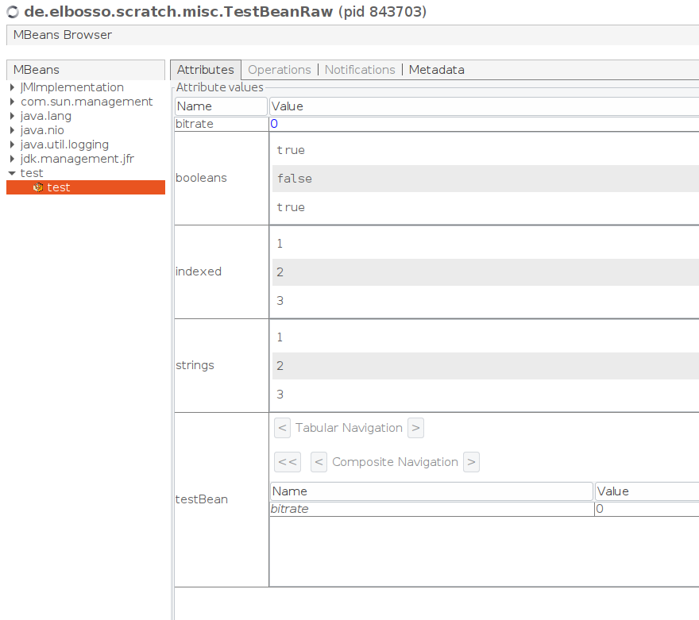

DynamicMBean Wrapper für JavaBeans

Nachdem ich meine Forschungen zu Annotations und BeanInfos für JavaBeans abgeschlossen hatte, entschloss ich mich ein weiteres Projekt zum Abschluss zu bringen, das bereits geraume Zeit geduldig im Backlog meiner Aufmerksamkeit harrte...
Die Mechanismen in JMX haben mir schon immer sehr gefallen. Daher baute ich sie auch zum Beispiel in die sQLshell und dWb+ ein.
Aber bereits damals fühlte ich, dass es eine einfachere Möglichkeit geben sollte (und müsste), beliebige Java-Objekte über diese Schnittstelle zur Verfügung zu stellen. Ich entschied mich dafür, entsprechende Experimente mit DynamicMBeans zu machen und Code zu schreiben, der über die Informationen aus der BeanInfo einer JavaBean eine entsprechende DynamicMBean erstellt und publiziert.
Ich wurde durch die diversen Beschränkungen des JMX-Standards dabei ein wenig ausgebremst: Nicht alle Datentypen können im JMX abgebildet werden und eine beliebige Tiefe eines Objektgraphen ist ebenfalls nicht zu erreichen. Dazu kommt noch, dass TabularData und CompositeData immutable sind: Man kann sich die Informationen etwa in VisualVM oder der JConsole lediglich ansehen, sie von dort aber nicht ändern.
Trotzdem blieb ich dran und kann nun stolz verkünden, dass ich JavaBeans mittels des entstandenen Wrappers automatisch zur Laufzeit in MBeans umwandeln und via JMX publizieren kann - Einschränkung dabei ist, dass etwaige als Properties enthaltene JavaBeans nicht bis zu einer beliebigen Tiefe abgebildet werden können - derzeit funktioniert der Wrapper nur für JavaBeans und in ihnen enthaltene JavaBeans. Sollten diese wiederum weitere JavaBeans enthalten, kann der Wrapper dies derzeit nicht abbilden.
So entsteht etwa aus diesen beiden JavaBeans
import de.elbosso.util.lang.annotations.BeanInfoRT;
import de.elbosso.util.lang.annotations.IndexedPropertyRT;
import de.elbosso.util.lang.annotations.PropertyRT;
@BeanInfoRT
public class TestBeanRaw extends Object //implements TestBeanMBean
{
public TestBeanRaw()
{
super();
}
private int bitrate;
@PropertyRT(name="bitrate")
public int getBitrate()
{
return bitrate;
}
@PropertyRT(name="bitrate")
public void setBitrate(int bitrate)
{
this.bitrate = bitrate;
}
public boolean doSomething(String a, String b)
{
bitrate+=2;
return false;
}
private java.lang.Integer[] intArray={1,2,3};
@IndexedPropertyRT(name="indexed")
public java.lang.Integer[] getIntArray()
{
return intArray;
}
@IndexedPropertyRT(name="indexed")
public void setIntArray(java.lang.Integer[] value)
{
intArray=value;
}
@IndexedPropertyRT(name="indexed")
public java.lang.Integer getIntArray(int index)
{
return intArray[index];
}
@IndexedPropertyRT(name="indexed")
public void setIntArray(int index, java.lang.Integer value)
{
intArray[index]=value;
}
private java.lang.String[] stringArray={"1","2","3"};
@PropertyRT(name="strings")
public java.lang.String[] getStringArray()
{
return stringArray;
}
@PropertyRT(name="strings")
public void setStringArray(java.lang.String[] value)
{
stringArray=value;
}
private java.lang.Boolean[] boolArray={true,false,true};
@PropertyRT(name="booleans")
public java.lang.Boolean[] getBoolArray()
{
return boolArray;
}
@PropertyRT(name="booleans")
public void setBoolArray(java.lang.Boolean[] value)
{
boolArray=value;
}
private TestBean testBean=new TestBean();
@PropertyRT(name="testBean")
public TestBean getTestBean()
{
return testBean;
}
@PropertyRT(name="testBean")
public void setTestBean(TestBean testBean)
{
this.testBean = testBean;
}
}
und
public class TestBean extends java.lang.Object
{
public TestBean()
{
super();
}
private int bitrate;
public int getBitrate()
{
return bitrate;
}
public void setBitrate(int bitrate)
{
this.bitrate = bitrate;
}
}
Nach der Publikation diese Ansicht in VisualVM:

Ansicht der JavaBean in VisualVM 


Vor 5 Jahren hier im Blog
-
Sonoff S20 und MQTT
07.03.2019
Wie bereits verschiedentlich beschrieben habe ich noch einmal an meiner eigenen Firmware für WLAN.Steckdosen weitergeschraubt
Weiterlesen...
Tags
Android Basteln C und C++ Chaos Datenbanken Docker dWb+ ESP Wifi Garten Geo Git(lab|hub) Go GUI Gui Hardware Java Jupyter Komponenten Links Linux Markdown Markup Music Numerik PKI-X.509-CA Python QBrowser Rants Raspi Revisited Security Software-Test sQLshell TeleGrafana Verschiedenes Video Virtualisierung Windows Upcoming...
Neueste Artikel
- Victor Borge
Ladies and Gentlemen - Victor Borge!
Weiterlesen... - bad-certificates Version 1.0.0
Das bereits vorgestellte Projekt zur automatisierten Erzeugung von Zertifikaten mit allen möglichen Fehlern hat eine Erweiterung erfahren und verfügt über ein Partnerprojekt - beide sind nunmehr in der Version 1.0.0 freigegeben
Weiterlesen... - Neue Version von EBMap4D
Die Anwendung EBMap4D wurde wieder einmal überarbeitet und erweitert.
Weiterlesen...
Manche nennen es Blog, manche Web-Seite - ich schreibe hier hin und wieder über meine Erlebnisse, Rückschläge und Erleuchtungen bei meinen Hobbies.
Wer daran teilhaben und eventuell sogar davon profitieren möchte, muß damit leben, daß ich hin und wieder kleine Ausflüge in Bereiche mache, die nichts mit IT, Administration oder Softwareentwicklung zu tun haben.
Ich wünsche allen Lesern viel Spaß und hin und wieder einen kleinen AHA!-Effekt...
PS: Meine öffentlichen GitHub-Repositories findet man hier - meine öffentlichen GitLab-Repositories finden sich dagegen hier.